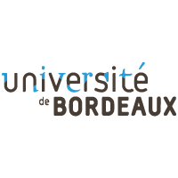

Bastien Chappis
About me
Enterprising, investigative and committed student with increasing expertise in both marketing and data-science domains. Possessing strong practical competencies rooted in substantial training as a neuroscientist.
LinkedIn ProfileEducation
- 
Experience
Junior consultant as XNode, Shanghai (China)
XNODE is an accelerator helping startups and corporates to gain a valuable understanding of the Chinese business ecosystem.
• Coordinated the audit XNODE in order to address their branding strategy.
• Identified the most relevant accelerators’ KPIs.
• Administered the measurement of XNODE - accelerator’s impact and relevance in the Chinese ecosystem.
• Created a database including corporates, startups and investors partners in order to obtain quantifiable evidence regarding the created value.
Freelance internet ad assessor at Lionbridge, Bordeaux (France)
• Participated in the enhancement of Human relevance systems related to Microsoft and Google technologies.
• Evaluated web content under diversified forms in order to improve it’s relevance to the user.
Intern researcher at neurocentre magendie, Bordeaux (France)
The Neurocentre Magendie is a dynamic scientific research pole of Bordeaux Neurocampus. It gathers more than 220 researchers distributed among 11 teams dedicated to the understanding of the cerebral system.
• Designed a precise 6-month research plan and protocol for measuring intracerebral neuronal electrical activity.
• Strengthened my expertise in ex-vivo patch clamp recordings, one of the hardest technical skill of the neuroscience domain.
• Collected and analyze hundreds of neuronal recordings, reporting decisive the key factors of memory impairments during fear conditioning.
Skills
- IT: Proficient in Excel, Power Point, Word, Illustrator, Tableau. Working knowledge of SQL, Python, R, HTML, CSS and PowerBI.
- Languages: French (native), English (fluent), Spanish (intermediate), Chinese (basic)
Interests
Sport | Music | Movies | Video Games